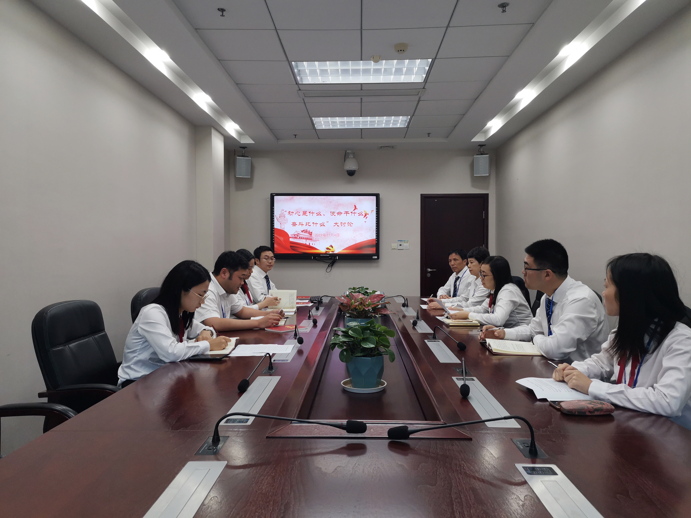

【信息发布时间：2019-11-05阅读次数：】 【我要打印】 【关闭】
9月以来，“不忘初心、牢记使命”主题教育活动开展得如火如荼，我中心党员干部认真研读了《习近平关于“不忘初心、牢记使命”论述摘编》，并联系公共资源交易工作实际，开展热烈讨论。11月4日下午，中心组织党员开展“初心是什么、使命干什么、奋斗比什么”大讨论，加深党员干部对“守初心、担使命、抓落实”主题教育的理解把握。
会上，各位党员结合主题教育学习心得及工作实际，进行了深入的讨论。讨论中，有的党员回忆了入党过程以及入党的初心，结合先进事例，谈论了初心是什么；有的党员结合公共资源交易改革纵深发展，谈论了使命干什么；有的党员围绕张家港全面推进“三超一争”的号召，谈论了奋斗比什么。
会上讨论气氛热烈，全体党员围绕“初心是什么、使命干什么、奋斗比什么”发表了自己的观点。会后，大家纷纷表示，要“坚守初心再出发、担当使命勇作为、砥砺奋进走在前”，脚踏实地、兢兢业业，以实干担当不负共产党员之名。
